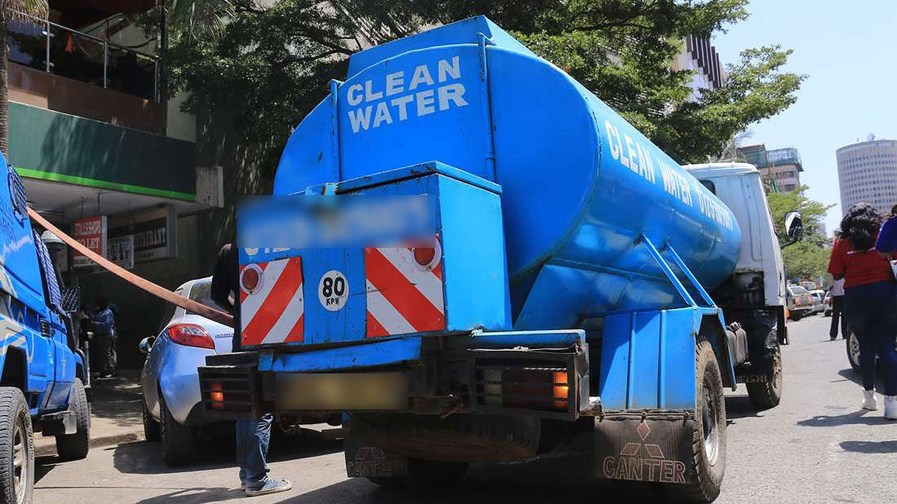
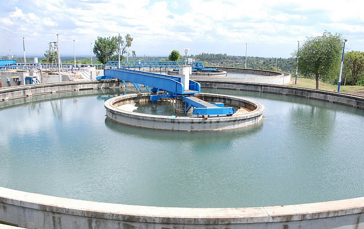
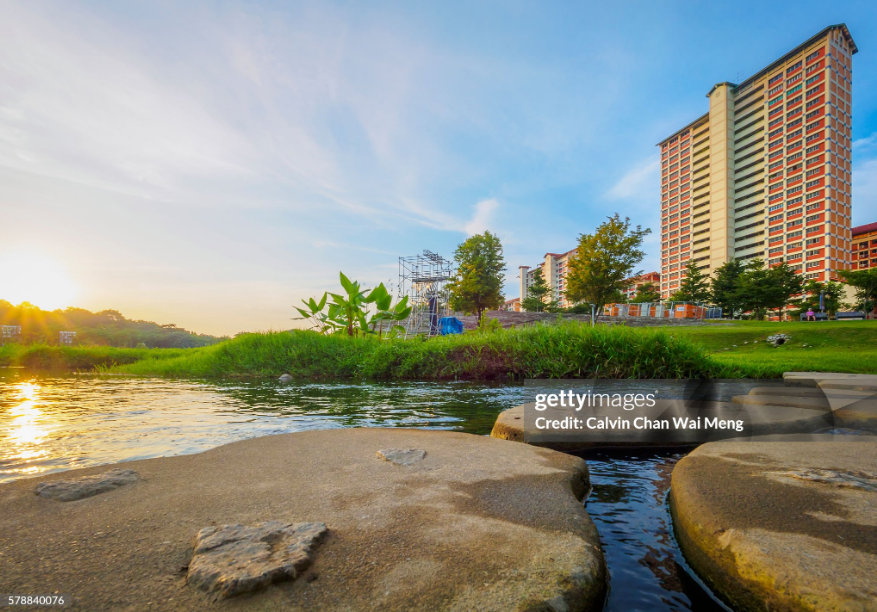

.png)

Access
Nairobi's Water Access Challenges
Water trucking remains a key intervention in informal settlements. There is an urgent need for piped infrastructure in underserved areas.
A strategic vision for water security, resilient infrastructure, environmental responsibility and inclusive access.
A personal water-sector perspective informed by professional experience and a commitment to sustainable development.
My experience with Nairobi City Water and Sewerage Company gave me a first-hand view of the challenges and opportunities surrounding sustainable water management.
That experience continues to shape my interest in scalable, resilient and inclusive approaches to water management.
The Ministry of Water and Sanitation has been associated with a long-term transformational agenda for Kenya's water sector, focused on water security and climate resilience for economic growth and social well-being.
Water is also an important enabler of improved livelihoods and broader development goals.
Key areas of interest within the broader water, sanitation and climate-action conversation.

Water trucking remains a key intervention in informal settlements. There is an urgent need for piped infrastructure in underserved areas.

Community-led sanitation initiatives can help address contamination concerns in the Nairobi River Basin while connecting innovation with participation.

Green infrastructure such as bio-swales and urban forests can support flood mitigation while creating opportunities for youth.
This portfolio reflects my commitment to shaping Kenya's water future — blending communication strategy, ground experience and forward-looking thinking around sustainable water management.